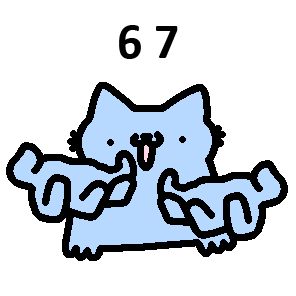

Walidacja strony HTML to
Walidacja strony HTML to proces sprawdzania, czy kod strony jest zgodny ze standardami W3C. Obejmuje to sprawdzenie składni i struktury kodu, co pozwala wykryć błędy, takie jak brak zamkniętych tagów czy zduplikowane atrybuty.
Walidator to program, który sprawdza poprawność dokumentu.
Poczta
Plik
tabela
pobieranie
Wojciech
Wojciech
Wojciech
Wojciech
Wojciech
Wojciech
Wojciech
Ambroziak Ambroziak Ambroziak Ambroziak Ambroziak Ambroziak :) uśmiech
:( smutek
:'( płacz
:O zdziwienie
:/ grymas
:C duży smutek
Adres: 80-188
Gdańsk
ul. Jana pawla
101/33 101/34
Ulubiony aktor: Ryan gosling
Ulubiony zespół muzyczny: The Beatles
Data urodzenia: 3 STYCZNIA 2011
H2 SO4
x*x = x2
Dowcipy o informatykach

Bułkaki i jajca
Żona do informatyka: – Idź do sklepu i kup bułki. Jak będą jajka, to weź dziesięć.
Dowcipy szkolne
Ślizgawica
Nauczycielka pyta: – Jasiu, dlaczego spóźniłeś się do szkoły?
Dowcipy o programistach
Halloween
– Dlaczego programiści mylą Halloween z Bożym Narodzeniem?
nazwisko ucznia imię ucznia
poniżej będą trzy poziomy numerowania/wyliczenia z różnymi rodzajami numerowania/wyliczenia
Tutaj są jezyki oraz sieci
jezyki programowania trudne
asembler
java
elixir
jezyki programowania latwe
pascal
scratch
Niby jezyki programowania
html
css
sql
standardy sieciowe
protokoły sieciowe
topologie sieciowe
strony WWW
serwery WWW
przeglądarki WWW */